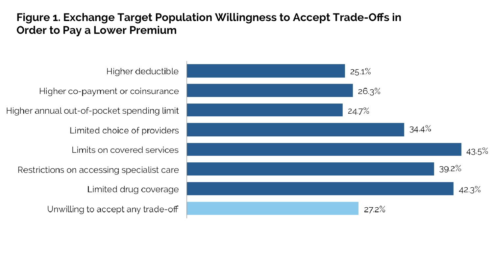
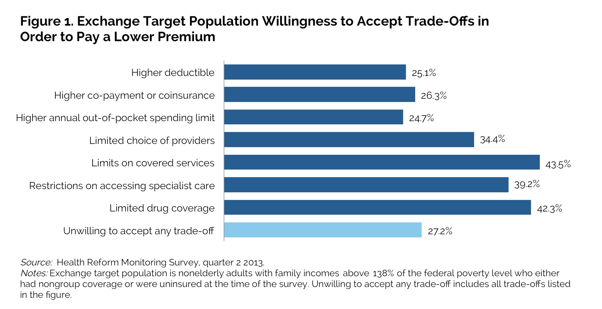

|  |
|
||||||||||||||||||||||||||||||||||||||||||||||||||||||||||||||||||||||||||||||||||||||||||||||||||||||||||||||||||||||||||||||||||||||||||||||||||||||||||||||||||||||||||||||||||||||||||||||||||||||||||||||||||||||||||
Factors Influencing Health Plan Choice among the Marketplace Target Population on the Eve of Health Reform
Linda J. Blumberg, Sharon K. Long, Genevieve M. Kenney, and Dana Goin
The health insurance Marketplaces (also called Exchanges), which opened their doors for the 2014 open-enrollment period in October 2013, provide structured markets through which individuals can purchase nongroup insurance. Many of those purchasing Marketplace-based insurance will be eligible for financial assistance in obtaining coverage. Marketplaces offer an array of plans from which consumers can choose, with options offered at different cost-sharing levels, with more or less restrictive provider networks, and some potential differences in covered services (although all will include coverage within categories of essential health benefits defined in the law). Deciding between plans will inevitably require consumers to make difficult trade-offs.
At present, little is known about the plan preferences of those most likely to enroll in the new Marketplace—people with incomes above 138 percent of the federal poverty level (FPL) who are currently either uninsured or purchasing nongroup insurance coverage. This brief examines what factors matter when these adults choose a new health insurance plan and what trade-offs they are willing to make in order to pay a lower premium for that coverage.
Focus of the Analysis
In June–July 2013, the Health Reform Monitoring Survey (HRMS) asked respondents to indicate the importance to them (i.e., very important, somewhat important, not very important, not at all important) of certain financial and nonfinancial factors in choosing a new health plan. Respondents were asked about six financial factors (premium, deductible, co-payment or coinsurance, amount paid for out-of-network care, maximum annual out-of-pocket spending limit, and availability of a health savings account) and five nonfinancial factors (choice of providers, availability of current providers, rules for accessing specialist care, the range of services available, and the availability of help managing a particular condition).
Respondents were also asked about their willingness to accept trade-offs in plan characteristics in order to pay lower premiums for their coverage. The potential financial trade-offs explored were higher co-payments or coinsurance, higher deductibles, and higher annual out-of-pocket spending limits; the potential nonfinancial trade-offs were limits on prescription drug coverage, covered services, provider choices, and accessing specialist care. In addition to presenting respondent willingness to accept each trade-off, a summary measure was created reflecting the share who indicated that they were unwilling to accept any trade-offs in an insurance plan in exchange for a lower premium
This analysis focuses exclusively on responses from the population most likely to enroll in Marketplace-based coverage: nonelderly adults who are currently uninsured or purchasing nongroup coverage, with incomes above 138 percent of FPL. Those with incomes between 138 and 400 percent of FPL are potentially eligible for financial assistance with the purchase of Marketplace-based coverage, while those with incomes above 400 percent of FPL would buy coverage entirely with their own funds. Lower-income respondents are excluded from this analysis because most will not be eligible for Marketplace-based financial assistance. Low-income individuals in states expanding Medicaid will be eligible for that program; thus, they will not be required to shop for coverage in the same way that Marketplace enrollees will, and their cost-sharing and premiums will be zero or a minimal amount.1
What We Found
When choosing a health plan, financial factors—such as premiums, deductibles, and maximum out-of-pocket spending caps—are important to many in the Marketplace target population, although nonfinancial factors also matter. When asked which factors are important to them in choosing a health plan, potential Marketplace enrollees most often rate the premium (67.1 percent), the deductible (62.0 percent), and the maximum annual out-of-pocket spending limit (57.8 percent) as very important (table 1). Other financial and nonfinancial factors are also important; over half of adults rank the amount of co-payments/coinsurance (54.3 percent), the choice of providers (55.8 percent), and the range of services available (55.0 percent) as very important.
Within the target population, the importance placed on different factors in choosing a health plan varies widely. Adults with nongroup coverage and older adults are more likely than uninsured and younger adults, respectively, to say that each plan characteristic is important. People with nongroup coverage and the uninsured emphasize the same factors as very important when choosing a plan, but those with nongroup coverage are more likely to place great importance on each factor (table 1). Perhaps reflecting the costs and limitations of their current coverage, high shares of those with nongroup coverage view many financial and nonfinancial characteristics of health plans as very important. For example, roughly three-quarters view a health plan's premium (78.1 percent) and deductible (74.0 percent) as very important; roughly two-thirds report the choice of providers (68.0 percent), maximum out-of-pocket spending cap (67.2 percent), range of services (65.1 percent), and amount of co-payments/coinsurance (62.4 percent) under the plan as very important. Among the uninsured, no more than 60 percent rate any factor—financial or nonfinancial—as very important. Similarly, older adults (age 50 to 64) in the Marketplace target population are much more likely than young adults (age 18 to 30) to rate each financial and nonfinancial factor as very important in choosing a health plan (table 2). For example, 83.1 percent of older adults rate the premium as very important when choosing a health plan, compared with 53.1 percent of young adults.
These variations may reflect differences in experience with health care and health insurance coverage, as well as differences in health insurance literacy. For example, other research from the HRMS suggests that older adults are more likely than younger adults to say they are confident that they understand health insurance terms (Blumberg et al. 2013). Younger adults and uninsured adults may reassess the importance of these factors in their health insurance choices as they become more knowledgeable.  The Marketplace target population is more willing to accept limits on covered services and drug coverage than higher cost-sharing in exchange for lower health insurance premiums. But, no single trade-off was chosen by a majority of respondents, and more than a quarter were unwilling to accept any trade-offs to lower premiums. When asked what trade-offs they would make to have lower health insurance premiums, people in the Marketplace target population are more likely to choose nonfinancial factors than financial factors (figure 1). The options chosen most often are limits on covered services (43.5 percent), drug coverage (42.3 percent), accessing specialist care (39.2 percent), and choice of providers (34.4 percent). The least popular trade-offs are those that explicitly increase out-of-pocket costs: higher co-payments/coinsurance (26.3 percent), higher deductibles (25.1 percent), and higher out-of-pocket spending maximums (24.7 percent). However, more than one in four surveyed adults (27.2 percent) are unwilling to accept any of these coverage trade-offs to obtain a lower premium. The share of adults unwilling to accept such trade-offs is higher for uninsured adults (32.2 percent) than those with nongroup coverage (19.5 percent; data not shown).
What It Means
Both the uninsured and those with nongroup insurance who are targeted for Marketplace enrollment attach importance to many different financial and nonfinancial factors when choosing a health plan, yet those with nongroup coverage tend to place greater importance on a broad range of plan characteristics in their decisionmaking. For example, 68.0 percent of nongroup purchasers in the Marketplace target group consider choice of providers very important, while 47.9 percent of the uninsured in the target group feel the same way. Similar patterns are seen when comparing older adults to younger adults.
Interestingly, given the popular perception that insurance premiums are too high, roughly a quarter of the Marketplace target group report that they would be unwilling to accept any of a broad array of possible trade-offs to lower their premiums. No single trade-off had broad appeal across the target population, with each option drawing in generally a quarter to a third of possible consumers. While the survey questions present hypothetical trade-offs, this reluctance to accept any trade-off in return for lower premiums suggests consumers will face challenges as they try to identify plans that best meet their needs.
The ACA's extensive reforms to nongroup markets mean that the products directly sold to individuals and families today do not reflect the options that will be available beginning in 2014. Today's nongroup markets are characterized by plans that offer limited benefits, high cost-sharing responsibilities, premiums that are set based on the perceived health risk and past claims experience of the applicant or enrollee, and outright exclusion of those with significant health needs. Because of the substantial differences in the nature of products being sold, nongroup purchasers' pre-ACA buying choices do not necessarily reflect the choices enrollees will make in 2014, when market rules require guaranteed issue of all policies, inclusion of essential health benefits, prohibition of premium or benefit discrimination based on health status, cost-sharing standards, and other consumer protections. The differences in products are likely driving many of the recent news reports that some nongroup purchasers who do not qualify for subsidized coverage in the Marketplaces are facing higher premiums in 2014.
In addition to those currently purchasing coverage in the nongroup market, significant numbers of uninsured people are expected to enter the new Marketplaces. Many have not recently shopped for their own coverage and may not have ever done so. Various types of assistance, including navigators, agents, brokers, in-person assistors, and call center personnel will be available to support consumers as they attempt to navigate enrollment web sites, compare plans, and choose and enroll in a plan that best suits their needs. Consumer preferences and understanding of health insurance will likely evolve over time as health insurance reforms are implemented under the ACA. And as consumers become better educated about health insurance coverage, their perceptions about the desirability of different types of trade-offs across plan characteristics will also change, altering the number and types of plans offered.
Reference
Blumberg, Linda J., Sharon K. Long, Genevieve M. Kenney, and Dana Goin, 2013. "Public Understanding of Basic Health Insurance Concepts on the Eve of Health Reform." Washington, DC: The Urban Institute.
About the Series
This brief is part of a series drawing on the Health Reform Monitoring Survey (HRMS), a quarterly survey of the nonelderly population that is exploring the value of cutting-edge Internet-based survey methods to monitor the Affordable Care Act (ACA) before data from federal government surveys are available. The briefs provide information on health insurance coverage, access to and use of health care, health care affordability, and self-reported health status, as well as timely data on important implementation issues under the ACA. Funding for the core HRMS is provided by the Robert Wood Johnson Foundation, the Ford Foundation, and the Urban Institute.
For more information on the HRMS and for other briefs in this series, visit www.urban.org/hrms.
About the Authors
Linda J. Blumberg and Sharon K. Long are senior fellows, Genevieve M. Kenney is codirector and senior fellow, and Dana Goin is a research assistant in the Urban Institute's Health Policy Center.
The authors gratefully acknowledge the suggestions and assistance of Fiona Blackshaw, John Holahan, Michael Karpman, Stephen Zuckerman, and Felicity Skidmore.
Note 1In states that do not expand Medicaid under the ACA, families with incomes over the federal poverty level ($23,550 for a family of four in 2013) will be eligible for subsidized coverage in the Marketplace if their incomes do not exceed 400 percent of FPL and they do not have access to affordable, adequate employer-based coverage. |
|||||||||||||||||||||||||||||||||||||||||||||||||||||||||||||||||||||||||||||||||||||||||||||||||||||||||||||||||||||||||||||||||||||||||||||||||||||||||||||||||||||||||||||||||||||||||||||||||||||||||||||||||||||||||||

 |
 |
 |